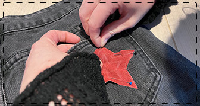

Het Naaiproject
In mijn naaiproject heb ik mijn broek ge-upcyclet. Met naald en draad geef ik mijn oude broek een tweede leven.
In mijn naaiproject heb ik mijn broek ge-upcyclet. Met naald en draad geef ik mijn oude broek een tweede leven.
Stap 1 uitleg...

Stap 2 uitleg...
Stap 3 uitleg...

Eindresultaat...